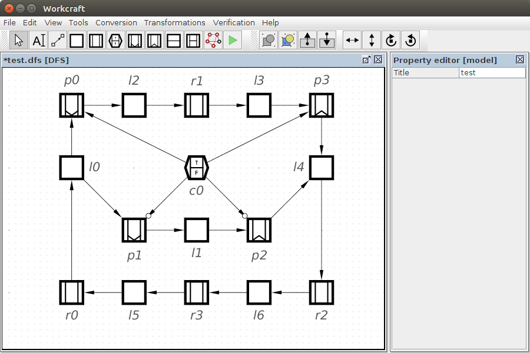
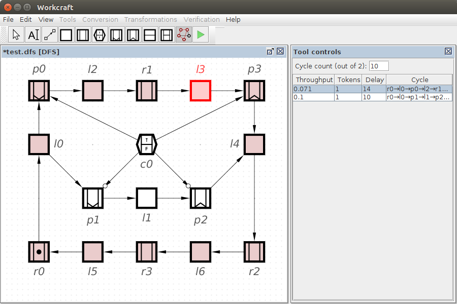
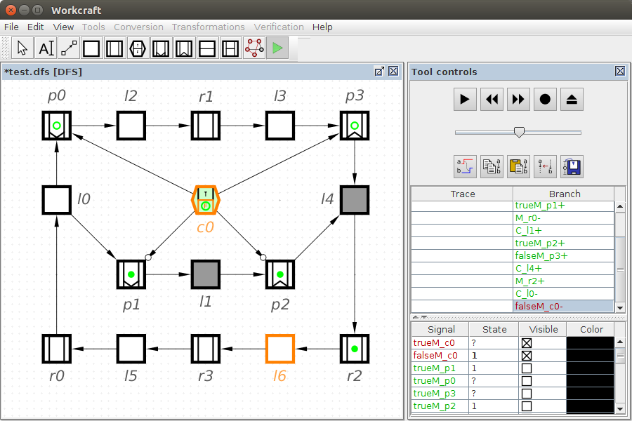

Table of Contents
Dataflow Structure plugin
Familiarise yourself with Workcraft interface to learn its common features that are available for all plugins.
This plugin is intended for capturing, simulation and verification of Dataflow Structure (DFS) models. It supports Static and Dynamic aspects of this model and also spread token and counterflow execution semantics. For simulation and verification a DFS model is automatically translated into a Signal Transition Graph (STG) that allows re-using the features of the STG plugin.
Capturing
In order to create a DFS model choose File→Create work… menu item and in the New work dialogue select Dataflow Structure as the model type.
Components
Dataflow Structures plugin supports 3 families of components:
- Static components (logic and registers).
- Dynamic components (control, push and pop registers).
- Counterflow components (logic and registers).
Select the corresponding generator tool to create components of a needed type.
Static components
The following terminology is used to describe the execution semantics of DFS model:
- A register component is marked if it has a token and a register is empty if it does not have a token.
- A logic component is reset if it has not evaluated its function yet and a logic component is computed if it has evaluated the function.
- Preset (postset) of a component is a set of components that are directly connected by its incoming (outgoing) arcs.
- R-preset (R-postset) of a component is a set of registers in its preset/postset, transitive through logic components.
- – logic generator – for modelling combinational logic of dataflow pipelines. The logic evaluation rules are as follows:
- A reset logic can compute if the following conditions are met:
- all logic components in its preset are computed;
- all registers in its preset are marked.
- A computed logic can reset if the following conditions are met:
- all logic components in its preset are reset;
- all registers in its preset are empty.
- – register generator – for modelling sequential elements of dataflow pipelines and data propagations as abstract tokens. The token propagation rules are as follows:
- A token can propagate to an empty register if the following conditions are met:
- all logic components in its preset are computed;
- all registers in its R-preset are marked;
- all registers in its R-postset are empty.
- A token can leave a marked register if the following conditions are met:
- all logic components in its preset are reset;
- all registers in its R-preset are empty;
- all registers in its R-postset are marked.
The above rules of token propagation define a so-called spread token execution semantics. A token can occupy several adjacent registers: its head expands to the succeeding registers, while its tail catches up.
Note that logic components can model Early evaluation – see the corresponding entry in the Property editor. An early evaluating logic component is denoted by EE label and its evaluation rules change as follows:
- A reset early evaluating logic can compute if any logic components in its preset is computed or any register in its preset is marked.
- A computed early evaluating logic can reset if any logic component in its preset is reset or any register in its preset is empty.
Dynamic components
As the name suggests, dynamic components enable the change of a Dataflow Structure in run-time, e.g. to selectively include, exclude or reorder the sections of a dataflow pipeline.
In addition to the terminology introduced for the static components, the dynamic components operate with two types of tokens: True or False. We use terms T-marked and F-marked to specify the state of a marked dynamic register.
- – control register generator – this register can hold a True or False token. The spread token execution semantics also applies here. The type of the stored token dynamically controls the propagation of tokens through the connected push and pop registers. The type of token that propagates into the control register depends on its Synchronisation type property (can be used to perform Boolean operation on the True and False tokens):
- plain - the control register behaves similar to a C-element:
- if all incoming tokens are False, then the resultant token is also False;
- if all incoming tokens are True, then the resultant token is also True;
- if there is a mismatch among the types of incoming tokens, then the control register cannot accept a new token.
- and - the control register behaves as an AND-gate:
- if all incoming tokens are True, then the resultant token is True;
- otherwise the resultant token is False.
- or - the control register behaves as an OR-gate:
- if all incoming tokens are False, then the resultant token is False;
- otherwise the resultant token is true.
![[U] Push register](editor_tools-push.png "[U] Push register") – push register generator – this register can behave in two different ways depending on the token type in the attached control register:
– push register generator – this register can behave in two different ways depending on the token type in the attached control register:- If the attached control register is T-marked then the push register behaves as a standard register, i.e. propagates tokens from its R-preset to its R-postset.
- If the attached control register is F-marked, then the next token that enters into the push register becomes False and does not propagate further (the token gets consumed by the push register).
- – pop register generator – this register can behave in two different ways depending on the token type in the attached control register:
- If the attached control register is T-marked then the pop register behaves as a standard register, i.e. propagates tokens from its R-preset to its R-postset.
- If the attached control register is F-marked, then a False token appears in the pop register (the token is produced by the pop register).
In a control register True and False tokens are depicted as empty circles with “T” and “F” symbols respectively. In the push and pop registers True tokens are depicted as filled circles (the same as for static registers), while False tokens are depicted as empty circles.
Counterflow components
The counterflow components are introduced to enable forward and backward flow of tokens. The forward flow is similar to the token propagation in standard static components, while the backward flow of tokens is used to inform the preceding components that their output is no longer needed. This so-called counterflow execution semantics is useful to model preemption and speculative execution.
- – counterflow logic generator
![[Q] Counterflow register](editor_tools-counterflow_register.png "[Q] Counterflow register") – counterflow register generator
– counterflow register generator
The details of counterflow execution are too complex for this document and can be found elsewhere [1]. Note that counterflow components are intended for experienced DFS users.
Connections
When the connection tool ![[C] Connect](../core/editor_tools-connect.png "[C] Connect") is active you can connect DFS components. Several connections may start at the same component and a component can have several incoming connections. If an incorrect connection is attempted (e.g. a connection from a dynamic component to a counterflow component) then a warning message will be issued.
is active you can connect DFS components. Several connections may start at the same component and a component can have several incoming connections. If an incorrect connection is attempted (e.g. a connection from a dynamic component to a counterflow component) then a warning message will be issued.

Note that the type of token received by a control register can be inverted by setting the Inverting property of the corresponding connection (the inversion is depicted as a small bubble at the arrowhead of the connection). This can be used to dynamically include or exclude a portion of a pipeline. In the above example the control register c0 dynamically decides which branch of the pipeline is exercised: p0→l6→r3→l7→p1 or p2→l1→p3.
Editing
For model editing, activate the selection tool ![[S] Select](../core/editor_tools-select.png "[S] Select") . All the standard editing features (select, drag-and-drop, delete, copy, undo, group, etc.) work the same – see generic help on Selection controls and Property editor for details.
. All the standard editing features (select, drag-and-drop, delete, copy, undo, group, etc.) work the same – see generic help on Selection controls and Property editor for details.
Similar to all the other models, textual comments can be created by activating the tool and clicking the editor panel in the position you want to put the text. Double-click on the note box to edit its text label in-place or do it through the property editor panel when the note is selected.
Cycle analysis
All the components can be associated with a Delay value in the Property editor (zero by default) that can be utilised for performance analysis of the Dataflow Structures. For this activate the cycle analyser tool – several slowest cycles (10 by default) will be enumerated in the Tool controls panel and the slowest nodes of the whole DFS graph will be highlighted in red. Selecting a cycle in the Tools control highlights it on the DFS graph and the slowest components of that cycle are also highlighted in red.

Simulation
For simulation of a DFS model activate the simulation tool ![[M] Simulate](../core/editor_tools-simulate.png "[M] Simulate") . The enabled components are highlighted and can be executed by clicking them. The simulation tool controls provide the means for analysis and navigation through the simulation trace, see generic help on Simulation controls for details.
. The enabled components are highlighted and can be executed by clicking them. The simulation tool controls provide the means for analysis and navigation through the simulation trace, see generic help on Simulation controls for details.

Note that simulation of a DFS model is just an abstraction over the simulation of an automatically generated STG representation of the DFS components.
Verification
Verification of a DFS model done via translation into an STG model and formulation of verification tasks in terms of the obtained STG. A DFS can be checked for deadlocks and output persistency by choosing a corresponding item from Verification menu:
- Deadlock freeness [MPSat] - verify if the DFS model is deadlock-free.
- Output persistency [MPSat] - verify if the DFS model is output-persistent.
- Deadlock freeness, output persistency (reuse unfolding) [MPSat] - verify if the DFS model is deadlock-free and output-persistent.
For example, if the inverting property of some arcs is set incorrectly (notice that we intentionally swapped the arcs highlighted in blue), then verification reveals the reachability of a deadlock state. The verification tool reports a trace (or a several traces) leading to the problematic state. A reported trace can be simulated (by pressing the Play button next to the trace) to better understand the causes of the problem.